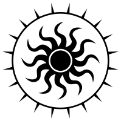
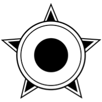
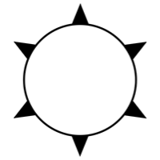

Scaleable Vector Graphics
Unlike images, SVG (Scalable Vector Graphics) are graphic symbols constructed of points an lines (vector), not pixels. This form of creating allows the browser to display the symbol at any size and keep the edges crisp and high quality.
The following symbol graphic was created, and exported to SVG at 200 x 200 pixels.

The following symbol is the exact same svg as the above, but scaled to be 500 x 500 pixels. Note that the quality is maintained.


